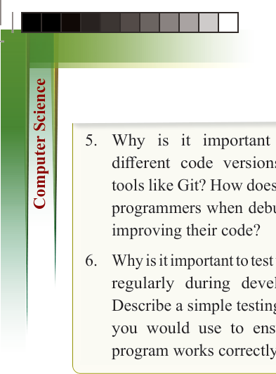
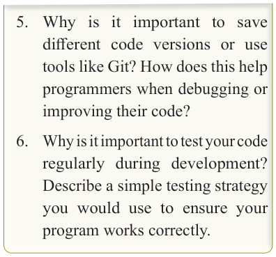
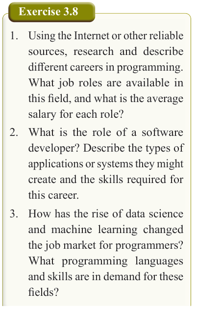

for Secondary Schools

5. Why is it important to save
different code versions or use
tools like Git? How does this help programmers when debugging or improving their code?
6. Why is it important to test your code
regularly during development?
Describe a simple testing strategy
you would use to ensure your
program works correctly.
Careers in programming and the future of coding
Learning to code opens up a wide range
of career opportunities across various industries. For example, software

developers build applications and


software solutions that people use every


day, while game developers design and

program video games for entertainment

or educational purposes. Those with an

interest in data may choose to become

data scientists, using programming to

analyse and interpret large datasets to

support informed decision-making. In the

field of cybersecurity, experts use coding


to protect digital systems from threats and

attacks. Similarly, web developers create

websites and web applications, shaping

the online experiences that are part of

daily life.

In addition to opening career paths,

programming is an essential skill in

today’s digital world. As technology

continues to evolve rapidly, coding


skills are increasingly in demand across

different sectors. Beyond employment,

learning to code enhances problem-


solving abilities and critical thinking. It
empowers individuals to create, automate,
and innovate in their chosen fields. As
digital technologies continue to grow
and impact nearly every industry, coding
remains a valuable and future-proof skill
that supports long-term career stability
and success.

Exercise 3.8
1. Using the Internet or other reliable
sources, research and describe
different careers in programming.
What job roles are available in
this field, and what is the average salary for each role?
2. What is the role of a software developer? Describe the types of
applications or systems they might
create and the skills required for this career.
3. How has the rise of data science
and machine learning changed
the job market for programmers?
What programming languages
and skills are in demand for these fields?